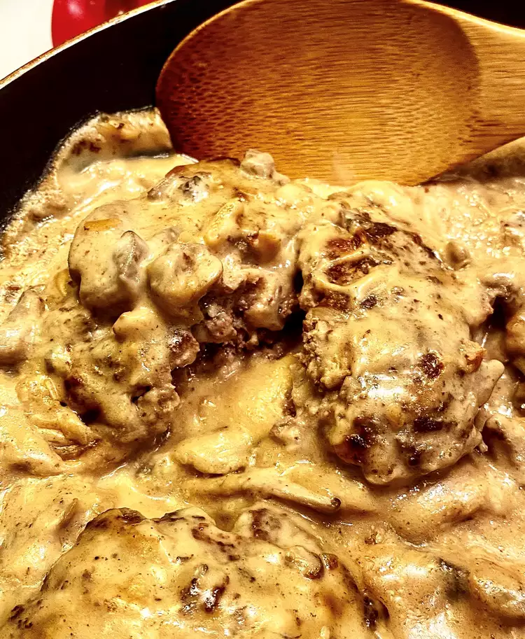

Smothered Hamburger Steak

Hamburgers with gravy and wooden spoon
Ingredients
- 2 eggs
- 2 tablespoons minced onion
- 1 tablespoon beef base
- ½ teaspoon black pepper
- 3 slices white bread
- 2 pounds lean ground beef
- 1 (10.75 ounce) can condensed cream of mushroom soup
- 1 (10.75 ounce) can water
- 1 dash Worcestershire sauce
Steps
-
Whisk together the eggs, onion, beef base, and pepper in a bowl. Tear the bread into large pieces, and place
into the bowl. Let the bread soak for a few seconds and add the ground beef. Mix the meat into the egg-bread
mixture, and form into 8 patties.
-
Heat a large heavy skillet over medium-high heat, and fry the patties until they are browned and the meat is
no
longer pink in the center, about 8 minutes per side. Set the patties aside.
-
Remove the excess grease from the skillet, and whisk the mushroom soup, water, and Worcestershire sauce
together
in the skillet until smooth. Place the patties back into the skillet, spoon sauce over them to cover, and
bring
to a boil over medium-high heat. Reduce the heat to a simmer, and cook until the sauce is thickened and the
flavors have blended, about 20 minutes.